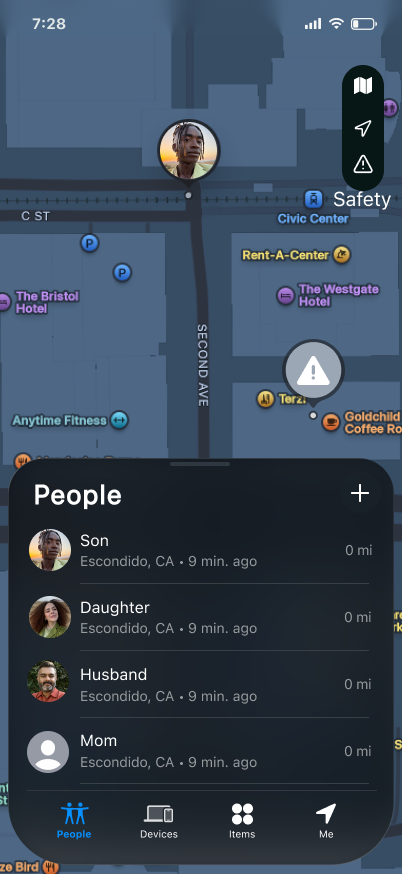
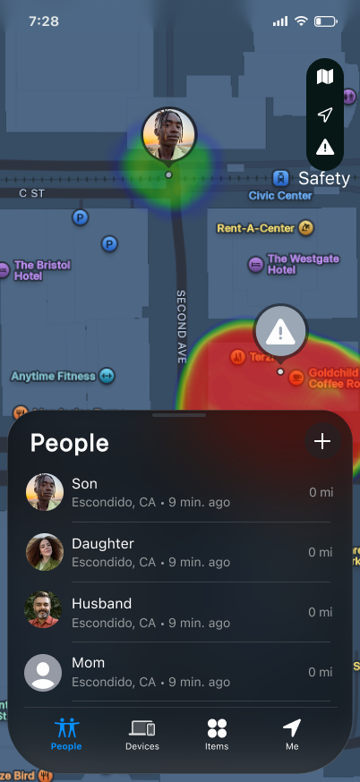
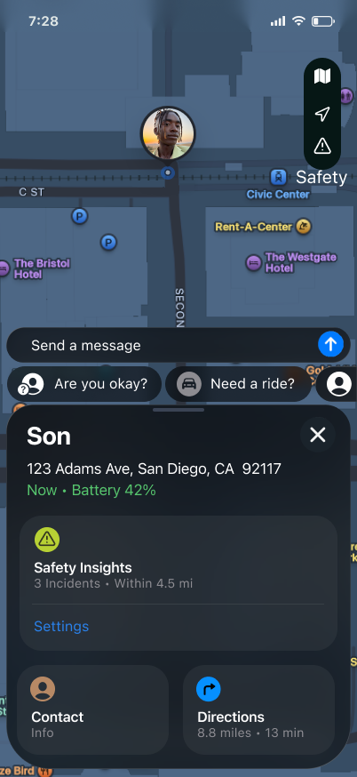
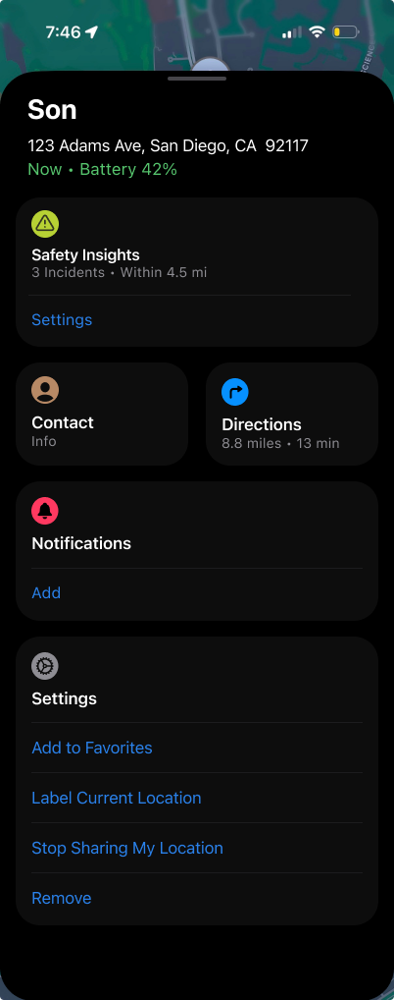
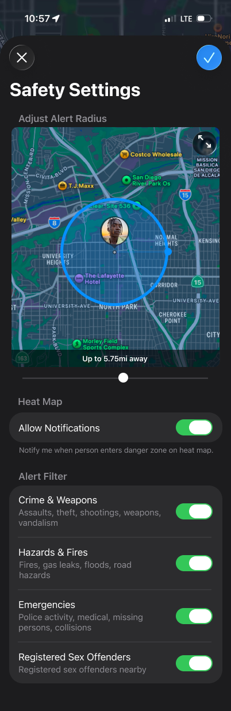
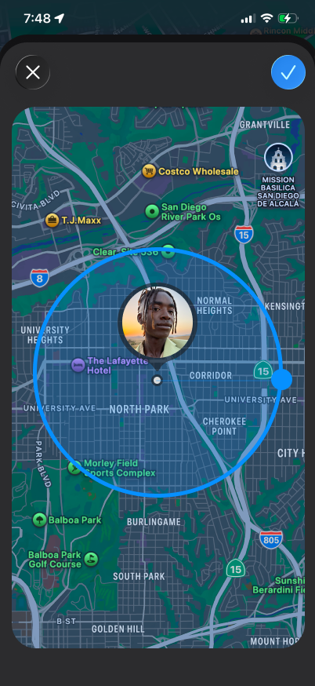
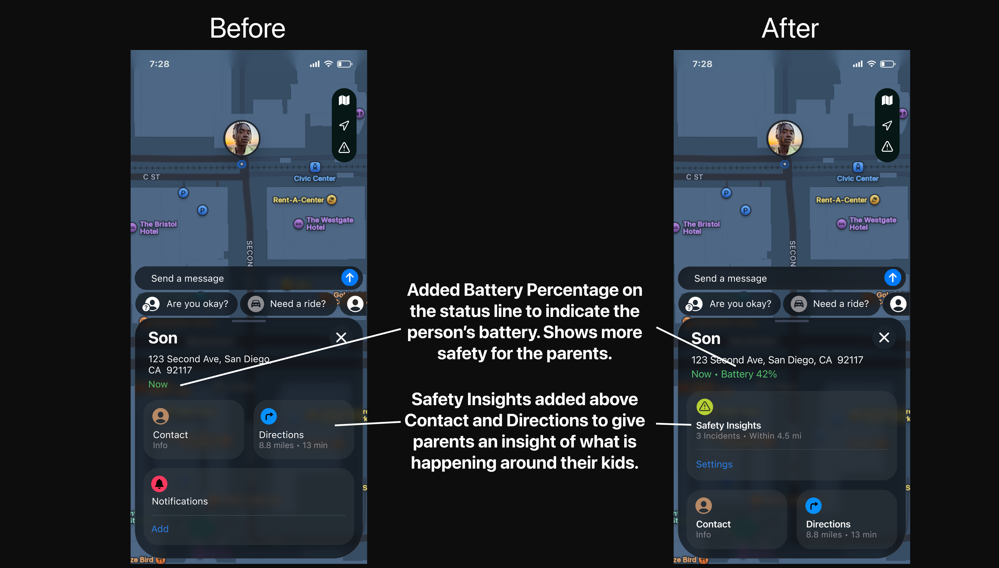
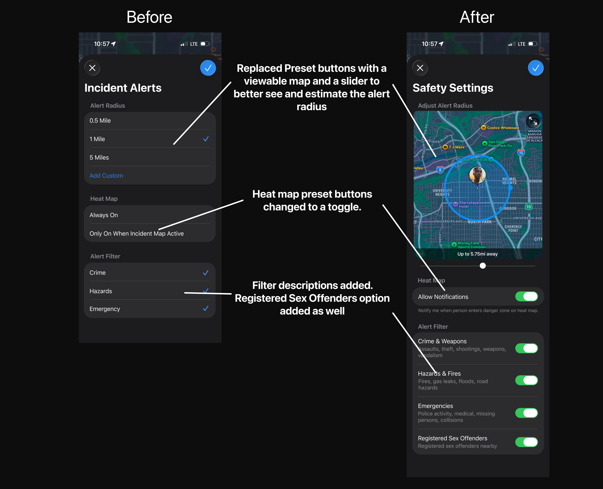

COGS127 · Product Design Case Study
A FindMy extension that gives parents more than just a location pin — it shows what's happening around their child through safety alerts, a heat map overlay, and quick ways to check in.


Overview
Apple FindMy is great at showing you where someone is, but it doesn't tell you anything about what's going on around them. As a parent, seeing your kid's location dot on a map still leaves a lot of unanswered questions — are they somewhere safe? Is something happening nearby? Should I call them right now?
We designed a safety layer that plugs into FindMy — adding incident alerts, a heat map, a customizable alert radius, and quick message shortcuts. The idea was to give parents more useful information without making them feel like they're using a completely different app.
"Just knowing where your kid is doesn't mean you know if they're okay."
User Research
We talked to parents who regularly use FindMy or Life360 to track their kids. We wanted to understand how they actually use these apps day-to-day and what still leaves them feeling uneasy.
Several of our interviewees said they check their child's location every 30 minutes, and even more often when their kid isn't responding to texts.
Knowing your child is at a specific address doesn't tell you if there's a crime happening nearby, a hazard on the street, or any other reason to be worried.
Most parents we talked to weren't trying to micromanage their kids — they just wanted a fast way to confirm everything's fine without having to call and seem overprotective.
Design Goals
We built everything inside FindMy's existing interface so parents wouldn't have to relearn how to use it. The goal was for it to feel like it was always there.
The heat map and incident alerts let parents get a sense of what's going on around their kid without having to open a second app or do any extra research.
We put quick message shortcuts right on the person card so parents can send a fast check-in without having to think about what to do or switch apps.
High-Fidelity Prototypes
These are the screens that cover the main things a parent would do — checking the map for safety info, tapping on a family member, setting up alerts, and adjusting the radius. I picked these because they show the core of what we added.
This is the first thing you see when you open the app. The heat map sits on top of the regular FindMy map and shows parents if there are any safety concerns near their child's location. We added a toggle so it doesn't clutter the map when you don't need it.
We kept the People list in the same spot because that's how parents already navigate the app. Adding the heat map on top of that felt natural — like the feature had always been part of FindMy.

We moved Safety Insights to the top of the card because that's the first thing a parent wants to see when they tap on their kid. In our user research, almost every time someone checked a location they immediately wanted to do something next — text them, check the area, or call. So we made those options easier to find.
We also added battery percentage right next to the timestamp. This came up in our interviews — parents said that when their kid isn't responding, a low battery just makes things more stressful. Showing it upfront costs nothing but saves a lot of worry.
This screen keeps all the main actions — Contact, Directions, Notifications, Settings — in one card so parents don't have to dig around. The Notifications section has an "Add" button right there so they can set up alerts without leaving the screen.
The whole point of this screen is fewer taps between "something seems off" and actually doing something about it.


This is where parents set up their alerts. They can adjust the radius, turn on heat map notifications, and choose which types of incidents they want to be alerted about. There's a live map preview so you can actually see how big your coverage area is while you're adjusting the slider.
We added descriptions under each filter category because during user testing, several parents didn't know what "Crime" or "Hazards" actually covered. The descriptions make it clear so parents can make informed choices.
This screen shows a circle on the map around your child's location so you can see exactly what area your alerts cover. A number like "5.75 miles" doesn't mean much on its own — seeing it drawn on a real map makes it a lot easier to understand.
This came directly out of user testing. Multiple parents had no idea how wide their coverage area was until we showed them a visual. Seeing the circle made it click for them immediately.

Prototype Summary
From opening the app and seeing the heat map to customizing your alerts — these five screens cover the whole flow.
User Testing
We tested our prototypes with four parents who all use location-sharing apps to keep tabs on their kids. Each person went through both versions of the prototype and tried the same tasks so we could compare what worked and what didn't.
Participant 1 — 55-year-old father, maintenance technician. Tracks his 22-year-old son who is away at college. Uses FindMy daily and PulsePoint separately for area safety alerts. Found through a team member's family. Interviewed in-person.
Participant 2 — Mother with children aged 19 and 21. Checks location every 30 minutes and rates her anxiety a 5 out of 5 when they are out. Uses only FindMy. Found through a team member's family. Interviewed in-person.
Participant 3 — Filipino-American mother, management analyst. Has daughters aged 16 and 22. Uses Life360 daily and checks location whenever her kids are out with friends. Found through a friend of a team member. Interviewed in-person.
Participant 4 — Filipino-American mother, nurse assistant. Has a 13-year-old daughter. Checks FindMy every 30 minutes and checks whenever her daughter does not respond to texts or calls. Found through a team member's sister. Interviewed in-person.
We showed each parent both versions of the prototype — our original Milestone 4 design and the updated Milestone 5 version. We started by just asking for their first impressions without explaining anything, then gave them specific tasks to try on their own:
Task 1: "Show me how you would set up alerts for your child's location."
Task 2: "Turn off the alerts for Hazards and Fires but keep the rest on."
Task 3: "Show me how you would set your child's alert radius to 5 miles."
After the tasks, we showed alternative screen designs and asked them to compare. We wanted to hear which version they actually liked better and why.
Everyone got the heat map right away — red means danger, green means safe. Nobody needed us to explain it. The built-in messaging was a big hit too. Participant 1 said the preset messages were especially useful while driving since you can't type safely. Participant 2 loved the "Are you okay?" button. Participants 3 and 4 both called the messaging feature easy and parent-friendly. All four preferred toggle switches over checkboxes — they felt more like something you set up once and don't touch again. Everyone also said the descriptions under the alert filters were helpful.
"Heat map" wasn't a term most of our participants knew — Participant 2 had never heard it, and Participant 4 wasn't sure what it meant. The label "Likely Safe" actually made things worse, not better — Participants 2 and 3 both said it felt alarming rather than reassuring. The preset radius list confused Participant 2, who couldn't figure out why you'd just pick a number without seeing what it looks like on a map. Nobody naturally used the blue radius circle for the custom setting, and Participant 3 pointed out that it would be confusing for parents who aren't very tech-savvy.
All four preferred the slider with the live map preview over the preset radius buttons. Seeing the circle on the map just made more sense to them. For the person card, Participant 1 wanted messaging at the top followed by safety info. Participants 3 and 4 wanted safety insights front and center. Participant 2 preferred the simplest layout — she said parents just want something short and clear. Everyone said they'd stay in the app to message their kid rather than switching to iMessage, as long as it was easy to find. Participants 3 and 4 also said they'd prefer if the in-app messages were linked to their actual iMessage thread.
We believe that by the time a parent opens FindMy, they're already a little anxious — so any confusion in the app makes things worse. What we kept seeing across all four sessions is that unclear language, vague labels, and settings that require guesswork all add friction at the worst possible moment. It's not enough to just show safety information. It needs to be clear enough that parents immediately know what it means and what to do about it. The goal is for them to feel more calm after checking the app, not more stressed.
Every participant preferred dragging the slider over clicking a number from a list. The live map preview helped them see what they were actually setting. Participant 1 also mentioned he'd want the max to be at least 10 miles.
The two heat map options — "Always On" and "Only On When Incident Map Active" — confused multiple people. Nobody could tell what the difference really meant. One toggle with a clear description fixes that.
Participants said the descriptions made the filters much easier to understand. Participant 1 also brought up wanting a Registered Sex Offenders filter without us asking — so we added it.
Participant 1 said he felt better right away when Safety Insights was the first thing he saw. In other layouts, he had to scroll past Contact and Directions to find it — which adds steps when you're already stressed.
Participants 2 and 4 both check location every 30 minutes and get more anxious when their kid doesn't respond. If the battery is low, that explains it — and showing it right there on the card means parents don't have to wonder.
Before & After
After our testing sessions, we went back and made specific changes to two screens based on what we heard. Here's what changed and why we made those calls.
We changed the order of information on the person card so that safety context shows up first instead of being buried under navigation buttons.

The original settings screen had options that confused our users. We redesigned it to be clearer, put everything in one place, and added a live map preview so parents can actually see what they're setting up.

Reflection
The part I'm most happy with is that we kept everything inside FindMy instead of building something new from scratch. Parents already know how to use the app, so adding features on top of that meant they didn't have to relearn anything. The safety layer just shows up where they already are.
User testing was honestly the most useful part of this whole project. I thought a lot of things were obvious — like what "heat map" means or what a 5-mile radius looks like — and they weren't at all. Watching real parents interact with the prototype showed me exactly where I was wrong, and that's what made the final version better.
If I had more time, I'd want to think more about the privacy side of this — specifically, how teens feel about being monitored and whether there's a way to make the feature feel less one-sided. Right now the design is entirely from the parent's perspective. Building something that works for both the parent and the teenager would be the next challenge to solve.